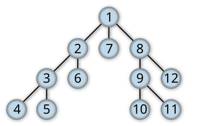

10.4 - עצים ומיון - הרצאה
עץ¶
- עץ הוא מבנה נתונים דומה לרשימה מקושרת, שכאשר כל חוליה יכולה להכיל מצביעים למספר חוליות. העץ הנפוץ ביותר הוא עץ בינארי - עץ בינארי הוא עץ שכל חוליה מכילה מצביע לעד שני חוליות בדיוק.
דוגמה למימוש עץ בינארי:
- יש עוד סוגים של עצים, אבל עץ בינארי הוא הנפוץ ביותר בשאלות אלגוריתמיקה.
חיפוש בעץ בינארי
נציג שני שיטות לחפש element מסויים בעץ בינארי:
DFS - Depth-first search¶
האלגוריתם החיפוש הזה עובד על עקרון של "ללכת כמה שיותר עמוק" לפני שחוזרים אחורה בחיפוש.
הנה דוגמה של סדר פעולות בחיפוש בעץ בינארי, המספרים מסמלים את הסדר של החיפוש:

- אפשר לראות שבסדר שבו אנחנו מחפשים, אנחנו קודם כל נכנסים ממש לרמה הכי נמוכה בעץ ורק אחרכך מתפרסים לכל הענפים.
- כדי לממש את הקוד פייתון של חיפוש DFS אנחנו משתמשים במחסנית.
שלבים
1. אנחנו יוצרים סט שנקרא visited שיכיל את כל הelements עליהם עברנו עד כו, ויוצרים מחסנית שתכיל את הlevel (הקומה) שאנחנו נמצאים בעץ.
2. בהתחלה במחסנית יהיה את החוליה הראשונה בעץ.
3. כל עוד המחסנית לא ריקה, שלוף element מהמחסנית ובדוק האם כבר ביקרנו בו, אם לא אז הכניס אותו לסט הvisited כדי לציין שביקרנו בו ואחרכך הכנס למחסנית את אחד הענפים של החוליה שעדיין לא ביקרנו בהם וחזור חלילה.
4. בסוף, אמור להיות לנו סט המכיל את כל המספרים שנמצאים בעץ, נחזיר את הסט הזה ובכך בO(1) כל אחד יוכל להשתמש בסט כדי לבדוק האם מספר מסויים קיים בעץ.
def dfs(graph, start):
visited = set()
stack = [start]
while stack:
vertex = stack.pop()
if vertex not in visited:
visited.add(vertex)
stack.extend(neighbor for neighbor in graph[vertex] if neighbor not in visited)
return visited
- עקבו אחרי הקוד, דבגו ותראו בעצמכם כיצד הוא עובד.
BFS - Breadth-first search¶
האלגוריתם החיפוש הזה עובד על עקרון של "לעבור על כל השכנים של החוליה הנוכחית" לפני שחוזרים אחורה בחיפוש.
הנה דוגמה של סדר פעולות בחיפוש בעץ בינארי:

- אפשר לראות שבסדר שבו אנחנו מחפשים, אנחנו קודם כל בודקים את כל השכנים של החוליה הנוכחית ורק אחרכך יורדים בקומות למטה.
- המימוש של BFS הוא זהה לחלוטין כמו DFS, רק שבמקום להשתמש במחסנית נשתמש בqueue.
from collections import deque
def bfs(graph, start):
visited = set()
queue = deque([start])
while queue:
vertex = queue.popleft()
if vertex not in visited:
visited.add(vertex)
queue.extend(neighbor for neighbor in graph[vertex] if neighbor not in visited)
return visited
- עקבו אחרי הקוד, דבגו ותראו בעצמכם כיצד הוא עובד.
מיון רשימה¶
מיון רשימה הוא בעיה נפוצה בראיונות עבודה, וישנם מספר אלגוריתמים נפוצים לפתרון הבעיה. כאן אסקור כמה מאלגוריתמי המיון הנפוצים ואסביר כיצד הם עובדים, כולל מימוש בפייתון.
1. מיון בחירה (Selection Sort)¶
עקרון העבודה:¶
מיון בחירה הוא אלגוריתם פשוט שפועל על ידי מציאת הערך הקטן ביותר ברשימה והעברתו למקום הראשון, לאחר מכן מוצאים את הקטן ביותר מבין הערכים הנותרים ומעבירים אותו למקום השני, וכך הלאה.
מימוש:¶
def selection_sort(arr):
for i in range(len(arr)):
min_idx = i
for j in range(i + 1, len(arr)):
if arr[j] < arr[min_idx]:
min_idx = j
arr[i], arr[min_idx] = arr[min_idx], arr[i]
return arr
- צפייה בסרטון של האלגוריתם בריצה: https://www.youtube.com/watch?v=92BfuxHn2XE
2. מיון בועות (Bubble Sort)¶
עקרון העבודה:¶
מיון בועות הוא אלגוריתם שפועל על ידי מעבר על הרשימה שוב ושוב והחלפה של זוגות ערכים סמוכים אם הם בסדר לא נכון, כך שהערך הגדול ביותר "צף" למעלה בכל מעבר.
מימוש:¶
def bubble_sort(arr):
n = len(arr)
for i in range(n):
for j in range(0, n-i-1):
if arr[j] > arr[j+1]:
arr[j], arr[j+1] = arr[j+1], arr[j]
return arr
- צפייה בסרטון של האלגוריתם בריצה:
3. מיון הכנסה (Insertion Sort)¶
עקרון העבודה:¶
מיון הכנסה פועל על ידי חלוקה של הרשימה לשני חלקים: חלק ממוין וחלק לא ממוין. בכל שלב, האלגוריתם לוקח את הערך הראשון בחלק הלא ממוין ומכניס אותו למקומו הנכון בחלק הממוין.
מימוש:¶
def insertion_sort(arr):
for i in range(1, len(arr)):
key = arr[i]
j = i - 1
while j >= 0 and key < arr[j]:
arr[j + 1] = arr[j]
j -= 1
arr[j + 1] = key
return arr
- צפייה בסרטון של האלגוריתם בריצה:
4. מיון מהיר (Quicksort)¶
עקרון העבודה:¶
מיון מהיר הוא אלגוריתם מיון נפוץ ויעיל המשתמש בעקרון הפרד ומשול. האלגוריתם בוחר ערך ציר (pivot) ומחלק את הרשימה לשני חלקים: הערכים הקטנים מהציר והערכים הגדולים ממנו. לאחר מכן האלגוריתם ממיין כל חלק בנפרד באופן רקורסיבי.
מימוש:¶
def quicksort(arr):
if len(arr) <= 1:
return arr
pivot = arr[len(arr) // 2]
left = [x for x in arr if x < pivot]
middle = [x for x in arr if x == pivot]
right = [x for x in arr if x > pivot]
return quicksort(left) + middle + quicksort(right)
- צפייה בסרטון של האלגוריתם בריצה:
5. מיון מיזוג (Merge Sort)¶
עקרון העבודה:¶
מיון מיזוג הוא אלגוריתם מיון נוסף המשתמש בעקרון הפרד ומשול. האלגוריתם מחלק את הרשימה לשניים, ממיין כל חלק בנפרד וממזג את החלקים הממוינים לתוך רשימה אחת.
מימוש:¶
def merge_sort(arr):
if len(arr) <= 1:
return arr
mid = len(arr) // 2
left = merge_sort(arr[:mid])
right = merge_sort(arr[mid:])
return merge(left, right)
def merge(left, right):
result = []
i = j = 0
while i < len(left) and j < len(right):
if left[i] < right[j]:
result.append(left[i])
i += 1
else:
result.append(right[j])
j += 1
result.extend(left[i:])
result.extend(right[j:])
return result
- צפייה בסרטון של האלגוריתם בריצה:
סיבוכיות זמן ריצה¶
- מיון בחירה, מיון בועות ומיון הכנסה הם אלגוריתמים פשוטים למימוש אך פחות יעילים לרשימות גדולות, עם סיבוכיות זמן ממוצעת של O(n^2).
- מיון מהיר ומיון מיזוג הם אלגוריתמים יעילים יותר, מיון מהיר נחשב מהיר יותר לרוב היישומים המעשיים למרות שיש לו סיבוכיות של O(n^2) במקרים מסוימים. ולעומת זאת מיון מיזוג יציב תמיד על O(n log n) (סיבוכיות יותר טובה), אך דורש זיכרון נוסף (סיבוכיות מקום) לאיחוד הרשימות.
תרגול¶
- המשיכו לעשות המון leetcode בעצמכם! לא מצליחים? הכל טוב, תקראו את הפתרונות באינטרנט. המשיכו עד שתשתפרו - עשו גם שאלות בעצים.